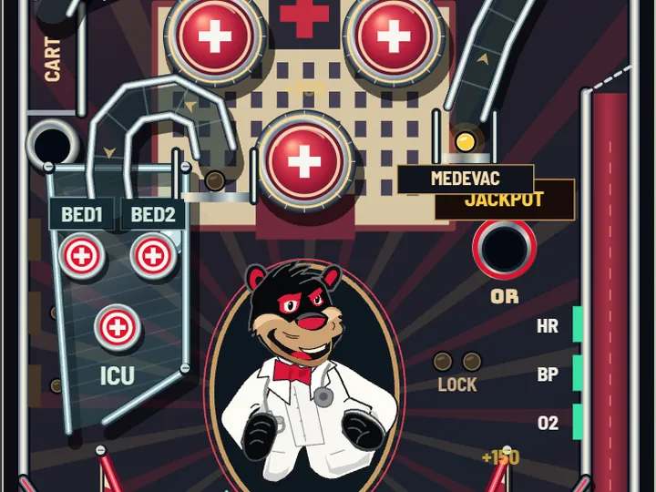

// Creation interview
Bearcat Pinball
Retro pinball for your downtime: climb from MS1 to Chief of Staff, one mission at a time.

“It’s super wild to me that one user can create something that required an entire dev team and likely months of programming, without sacrificing quality.”
ClaudeWhy pinball?
BrandonI grew up playing Space Cadet on my computer, and pinball is a universally fun game for whenever you have downtime. I love vintage video games because they remind me of my childhood, and of a time when people were creating things enthusiastically.
It’s wild to me that we’re now in a time when one person can make what used to take an entire dev team and months of programming, without sacrificing quality. That’s the biggest takeaway I want people to see.
ClaudeAnd why a bearcat?
BrandonDesign was my other inspiration. I thought it would be fun to give it a medical theme, with a bearcat in a white coat as the mascot.
// Bearcat Pinball is an independent game. It has no connection to any university or sports team.
“I like the ICU bumpers because it’s challenging to get into that zone, just like my struggles escalating patients to the real ICU.”
ClaudeHow does it play?
BrandonIt’s a retro pinball game with missions. You start as an MS1 and get promoted with each mission you finish: MS2, MS3, MS4, Intern, Resident, Fellow, then Attending.
- Triage: hit the bumpers.
- Diagnose: light X-RAY, LABS and EKG.
- Medevac: ride the ramp.
- Rounds: roll through the M·E·D lanes.
- ICU: hit the ICU bumpers.
- Vitals: knock down HR, BP and O2.
- Surgery: sink the ball in the OR.
- Code Run: shoot orbits around the top, once you’re an Attending.
Reaching Intern earns an extra ball. Reaching Attending unlocks Chief of Staff: 45 seconds of two-ball multiball where everything scores triple. Along the way there’s a Mass Casualty multiball, a Crash Cart that charges from 150 to 360 joules, a DEFIB kickback and an adrenaline rush that doubles your score.
ClaudeFavorite part of the table?
BrandonI like the ICU bumpers, because it’s challenging to get into that zone, just like my struggles escalating patients to the real ICU.
ClaudeHow was it built?
BrandonClaude wrote the game engine and ChatGPT did the design, in about five hours.
ClaudeWhat was the hardest part?
BrandonGetting the two AIs to work together on the user interface. The fix was a clear split: ChatGPT owns the look (the styles, artwork and drawing code), Claude owns the engine (physics, table layout and mission rules), and there are rules so neither breaks the other’s work.
In the end it was a good proof of concept that we should empower ourselves to make high-quality resources. You don’t have to know anything about code to make things like this!
ClaudeWho’s playing?
BrandonLots of people, at least 50, and many keep coming back. My friend Ken (not a doctor, despite his arcade name) beat me recently, and I’m salty about it.
ClaudeAnything players should know?
BrandonIt’s for fun, perfect for downtime, not a teaching tool. It always loads, runs smoothly, and is simple yet engaging.
ClaudeWhat’s next, and how can members help?
BrandonI may make a spinoff at some point. I’d love to share the code with members so they can iterate on it and make and share their own versions. I’d love to have an “Arcade Room” on the AI Medicine Collective site.
“You don’t have to know anything about code to make things like this!”
> Play Bearcat Pinball > All games